Как Ваня скажет
Ролик на 30 секунд про войсмод ГигаЧата с голосом Вани Дмитриенко. Снимаем двумя камерами: от лица телефона и со стороны.
Каждая сцена снята двумя камерами.
Вопрос героя снимаем от лица телефона. Герой держит телефон или кладёт его рядом и говорит в него. Камера двигается вместе с ним: давка, наклон, поворот кресла. Движения идут из действия сцены.
Ответ Вани снимаем со стороны статичной камерой. Голова Вани стоит ровно в той точке, где закончился предыдущий кадр: где оказался телефон, там и лицо Вани. Лицо крупно на переднем плане, герой рядом или за ним.
В финале Ваня со стороны, в руке телефон с открытым интерфейсом ГигаЧата.

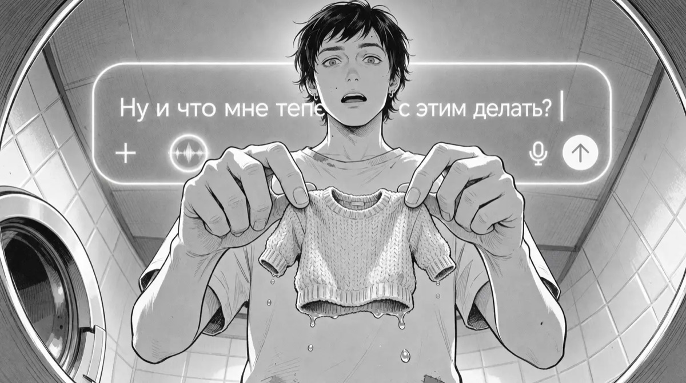
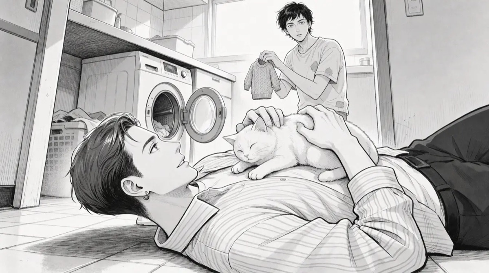
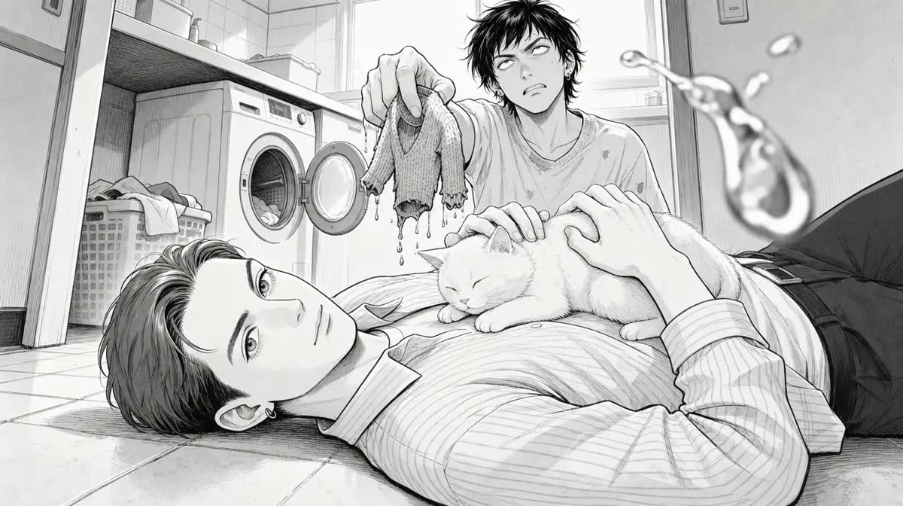
Парень у стиральной машины, портрет крупно. Одной рукой держит телефон, другой лезет в барабан и тянет мокрый свитер, тот застрял.
Вытягивает. Кладёт телефон на пол экраном вверх и разворачивает над ним севший свитер: снизу видим свитер и лицо парня над ним. Свитер сел так, что теперь впору коту.
Ну и что мне теперь с этим делать?
На переднем плане крупно лицо Вани: он лежит на полу ровно там, где лежит телефон, и жамкает белого кота на груди. Смотрит снизу на парня. За ним парень со свитером и стиралка.
Скажу честно, Беляшу он теперь подходит больше
Беляш мурлычет от удовольствия. Парень переводит взгляд со свитера на кота и закатывает глаза.
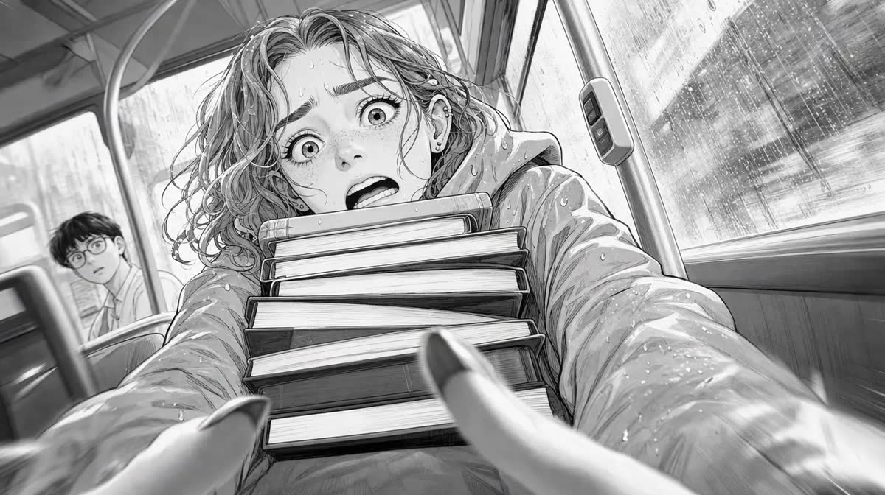

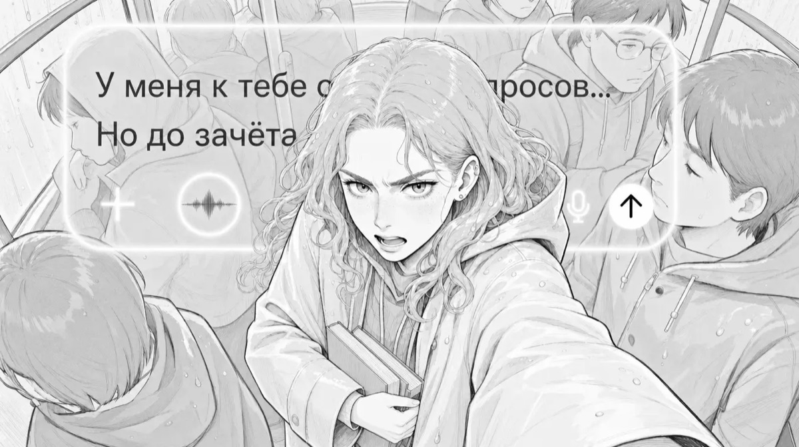
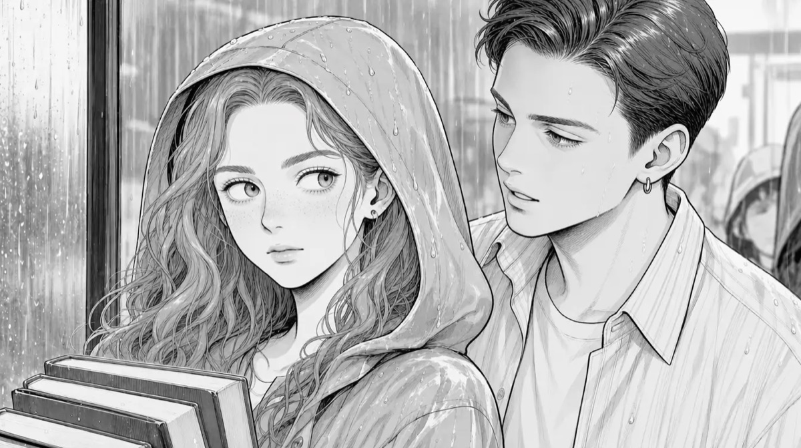
Телефон у столба поручня с красной кнопкой «стоп». Девушка держит в руках гору конспектов и учебников и пытается удержать телефон длинными ногтями, он выскальзывает, кадр дёргается.
Двери открываются, входит толпа и заталкивает её глубже в салон, битком. Мокрые плащи проходят вплотную к объективу. Она поднимает телефон чуть над собой, чтобы его не раздавили, и в сердцах, но шёпотом говорит в него снизу вверх.
У меня к тебе столько вопросов… Но до зачета 20 минут
Ракурс с другой стороны. Лицо Вани там, где в конце был телефон, над её плечом, вплотную к ней: мокрые локоны, влажное лицо. Отвечает тихо, почти на ухо.
А если подскажу, как выучить все билеты за пять остановок?
У девушки загораются глаза, она выдыхает.
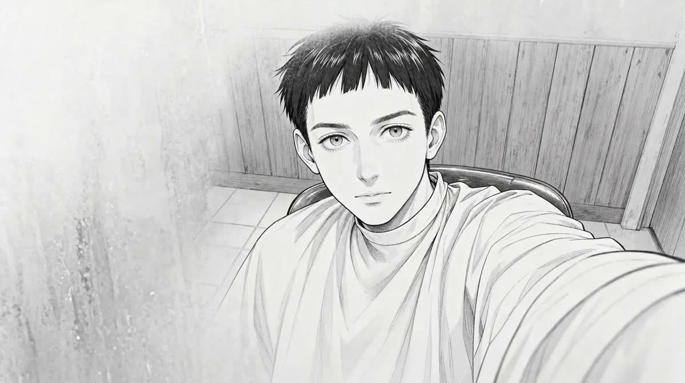
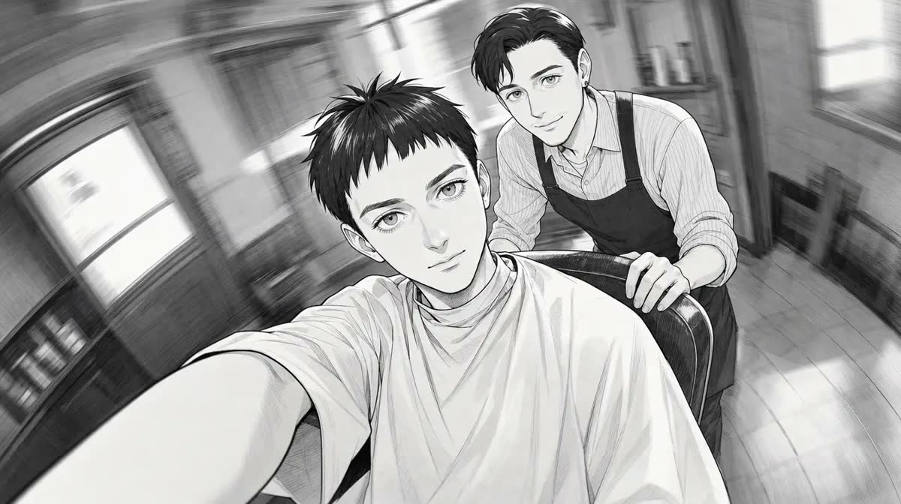
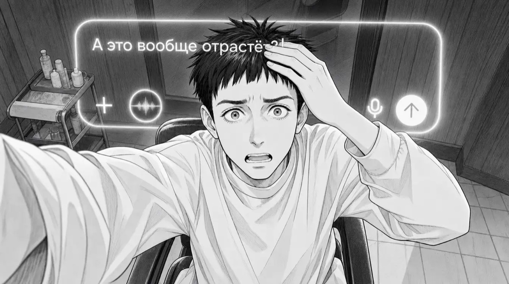

Палец вытирает запотевший объектив фронтальной камеры телефона. Парень в кресле, держит телефон перед собой как зеркало. Барбер разворачивает кресло, кадр проворачивается вместе с ним.
Парень поднимает телефон, разглядывает нелепую чёлку, приглаживает её, она снова встаёт. Сдаётся и опускает руку с телефоном низко сбоку, на уровень плеча, к соседнему креслу.
А это вообще отрастёт?
Ваня в соседнем кресле как клиент: пена на лице, полотенце на шее. Барбер откинул его кресло для бритья, и голова Вани оказывается ровно там, где был телефон, рядом с головой парня с чёлкой.
Могу сказать, где купить крутую кепку
Парень, не глядя на Ваню, поднимает бровь, словно идея ему зашла.
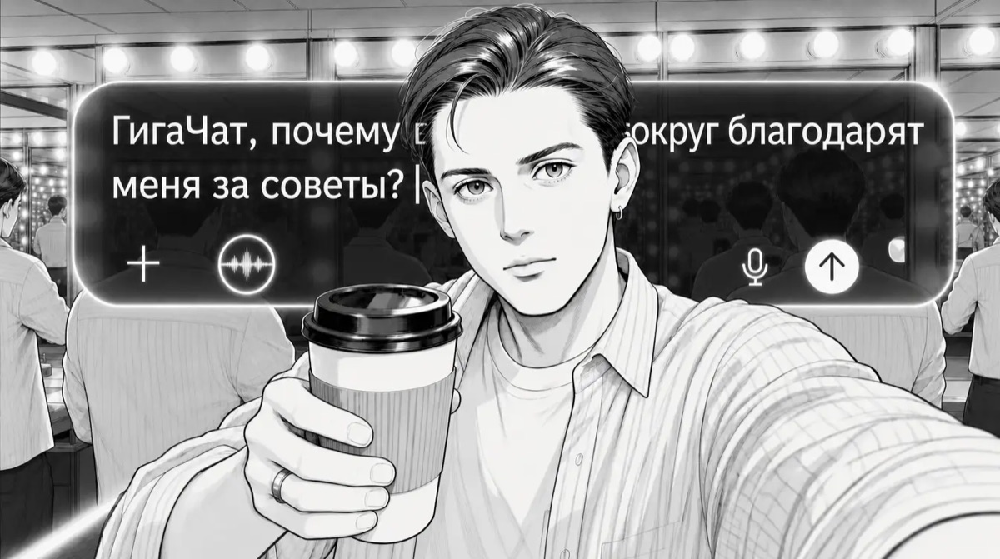
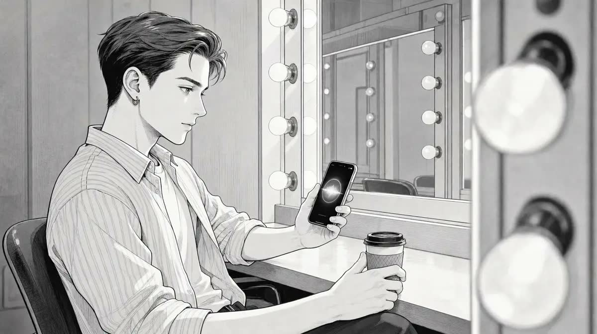
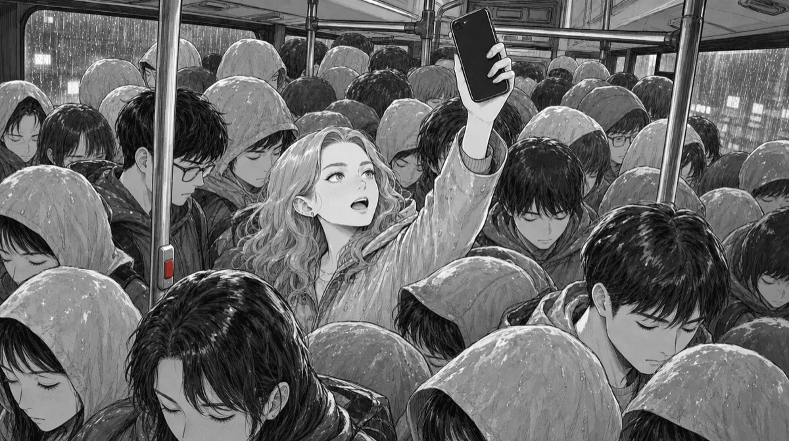
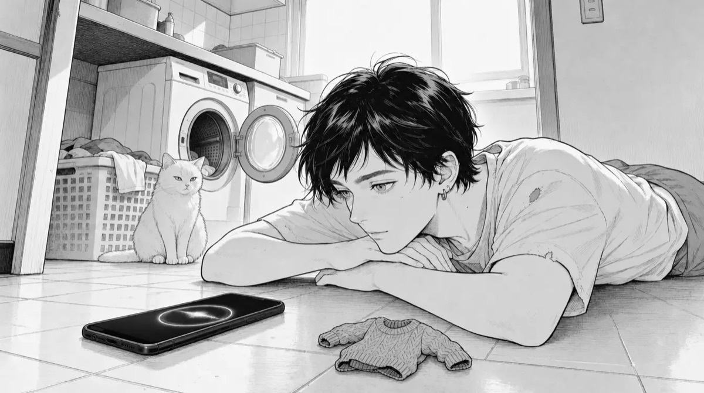
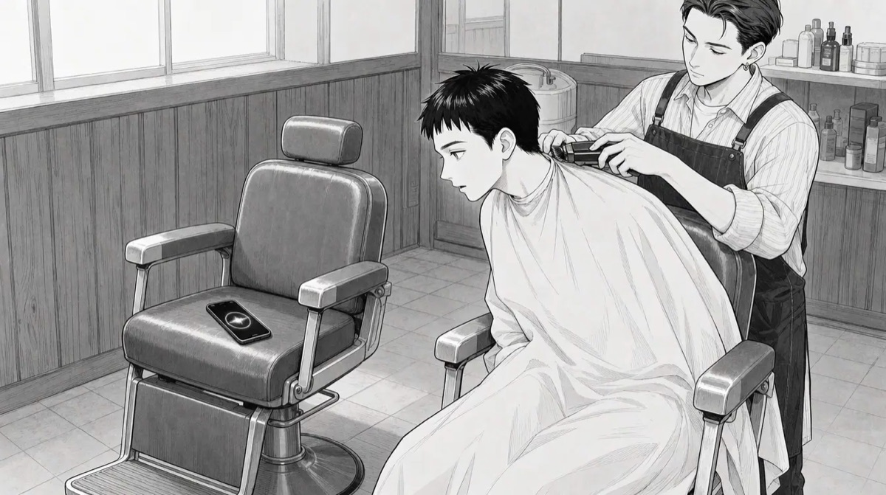

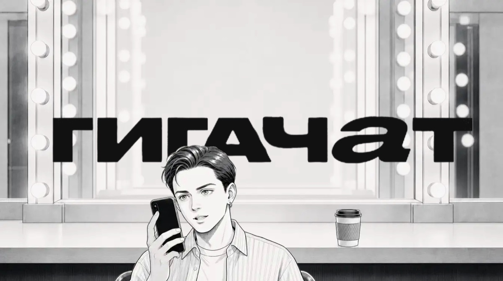
Кадр открывается из-за бумажного стакана кофе: он перекрывает Ваню целиком. Ваня отводит стакан, видно лицо. В одной руке кофе, в другой телефон, поэтому с ГигаЧатом он говорит голосом. Ваня подходит к гримёрному креслу, начинает садиться.
ГигаЧат, почему все вокруг благодарят меня за советы?
Ваня садится в кресло. Одной рукой ставит кофе на стол перед собой, в другой телефон экраном к нам: открыт голосовой режим ГигаЧата.
А это ты мне скажи
Короткие склейки: герои прошлых сцен общаются с телефоном. Реплик не слышим, видим только их запросы. Девушка вытягивает руку с телефоном прямо между толпы в автобусе, у парня в ванной телефон на полу, в барбершопе — на соседнем кресле. Телефоны с интерфейсом голосового режима.
Укрупнение на лицо Вани: он удивлённо смотрит на телефон, затем поднимает взгляд в камеру.
Новый войсмод с голосом Вани Дмитриенко — уже в твоём ИИ-помощнике
Ваня общается с ГигаЧатом, на этом фоне лого.
ГигаЧат — всё как Ваня скажет
POV
Экшн-камера в руке актёра. Актёр сам держит и двигает её. Широкий объектив, лицо близко. Движения: портрет у стиралки и телефон на пол, давка в автобусе и телефон над головой, поворот кресла.
Площадки
Квартира со стиралкой, барбершоп и гримёрка: декорации в павильоне. Автобус пробуем двумя способами: декорация или настоящий автобус рядом с павильоном.
Ответы
Штатив. Точку ставим от конца POV-кадра: где оказался телефон, туда кладём/ставим/размещаем голову Вани. Лицо Вани крупно на переднем плане, герой рядом или за ним. Квартира от пола, автобус с полуверхней точки, барбершоп сбоку на уровне откинутого кресла. Ваня начинает реплику ещё на POV, склейка на ответ идёт посреди его фразы.
Автобус
Ливень за окнами: дождевальная установка снаружи, автобус стоит на площадке, качку даём раскачкой корпуса. Массовка в мокрых плащах, плащи и волосы мочим перед каждым дублем.
Переходы
Снимаем практически и дорабатываем в 3D: например, крупно палец героя или капля, прилетающая в объектив. Следующий POV начинается с того же: палец вытирает запотевший объектив.
Дубли
Каждую сцену снимаем одним-двумя длинными дублями POV и одним статичным планом.